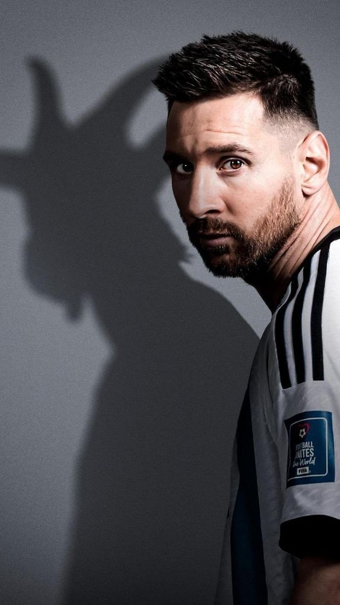

¿Quién es Leo Messi?

1Sus inicios
Lionel Messi nació el 24 de junio de 1987 en Rosario, Argentina. Desde pequeño mostró un talento excepcional para el fútbol, comenzando en el club local Grandoli y luego en Newell's Old Boys.
2Dentro del campo
Lionel Messi es un jugador excepcionalmente técnico, con una capacidad única para driblar, pasar y definir. Su visión de juego y toma de decisiones rápidas lo hacen impredecible y letal en ataque. Además, es consistente y lidera con su rendimiento en el campo.
3Fuera del campo
Fuera del campo, Lionel Messi es humilde, reservado y muy familiar. Dedica tiempo a su esposa e hijos y participa en obras benéficas a través de su fundación. Prefiere una vida privada tranquila, lejos del protagonismo mediático.